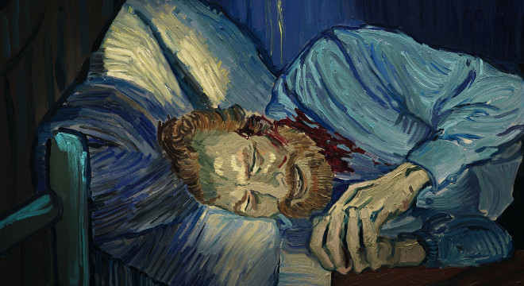
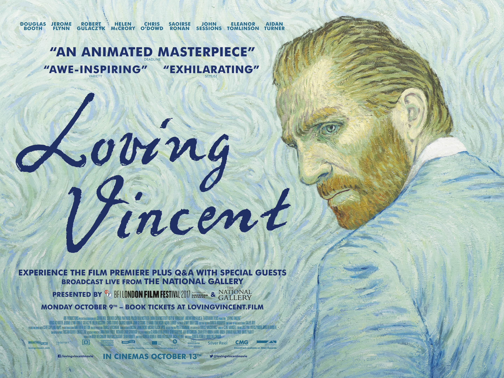

หลายคนเชื่อว่า แวน โก๊ะ เสียชีวิตด้วยการยิงตัวตาย เมื่อวันที่ 27 กรกฎาคม ค.ศ. 1890 เขาไม่ได้เสียชีวิตในทันที
แต่ซมซานกลับมาที่โรงแรม ก่อนจะจากโลกนี้ไปหลังสั่งเสียกับ หมอกาเชต์
แน่นอนว่าตั้งแต่ตัดหูข้างหนึ่งของตัวเอง ผู้คนส่วนมากในฝรั่งเศสก็มองว่าเขาเป็นบ้า ซึ่งต่อมาวันเกิดของ แวน
โก๊ะ ก็ตรงกับ วันไบโพลาร์โลก (ไม่แน่ใจว่าเชื่อมโยงกันหรือไม่) แต่ในภาพยนตร์อนิเมชั่นเรื่อง Loving Vincent
ในปี 2017 เสนอแนวคิดที่ต่างออกไป โดยเฉพาะสาเหตุการตายของ แวน โก๊ะ

Loving Vincent มีชื่อเข้าชิงรางวัลออสการ์สาขาภาพยนตร์อนิเมชั่นยอดเยี่ยม ปี 2018
ถ่ายทอดเรื่องราวผ่านรูปวาดสีน้ำมันเป็นเรื่องแรกของโลก โดยสร้างสรรค์จากปลายพู่กันของศิลปินกว่า 100
ชีวิตและใช้ระยะเวลาสร้างกว่า 7 ปี เนื้อหาเล่าถึงการเดินทางของ อาร์มาน ลูกชายของ โจเซฟ รูแล็ง
บุรุษไปรษณีย์ที่คอยส่งจดหมายของ แวน โก๊ะ ซึ่งส่วนใหญ่เขียนถึง ธีโอ น้องชาย (จดหมายที่เขียนมากถึง 800 ฉบับ)
อาร์มาน ถูกพ่อตัวเองขอร้องให้เดินทางมาส่งจดหมาย 1 ฉบับ ที่ตกค้างอยู่ของ แวน โก๊ะ ให้กับผู้ที่สมควรจะได้รับ
ระหว่างทาง อาร์มาน พบเรื่องราวอีกด้านหนึ่งทั้งการที่ แวน โก๊ะ ต่อสู้กับอาการป่วยจิตเวชจนหายแล้ว
ไม่มีเหตุผลใดที่จะต้องฆ่าตัวตาย รวมถึงข้อสังเกตเรื่องการยิงตัวเองแบบประหลาด
อย่างการยิงเข้าที่หน้าท้องแทนที่จะเป็นหัว ซึ่งมีหมอรายหนึ่งเชื่อว่าจากมุมของกระสุน แวน โก๊ะ ถูกยิง
มากกว่าจะยิงตัวเอง
ขณะเดียวกัน อาร์มาน ยังพบว่า แวน โก๊ะ มีความลับเรื่องการแอบคบหากับลูกสาวของ หมอกาเชต์
ที่อาจเป็นชนวนนำไปสู่การทะเลาะเบาะแว้งของทั้งสองคน ซึ่ง หมอกาเชต์ มีปืนในบ้าน แต่มันหายไปหลังจาก แวน โก๊ะ
เสียชีวิต
นอกจากนี้ ยังมีอีกทฤษฎีหนึ่งที่ อาร์มาน สงสัยคือ แวน โก๊ะ
อาจถูกฆาตกรรมโดยเพื่อนคนรวยนิสัยเกเรที่ชอบแกล้งเขาเป็นประจำ จนอาจเกิดเหตุลงไม้ลงมือ เลยเถิดไปถึงการยิงกันได้
แต่ความจริงไม่ได้ถูกขุดคุ้ย เนื่องจาก แวน โก๊ะ ไม่ได้กล่าวโทษใครในวาระสุดท้ายของชีวิต
การตายของเขาจึงยังคงเป็นปริศนาจนถึงทุกวันนี้